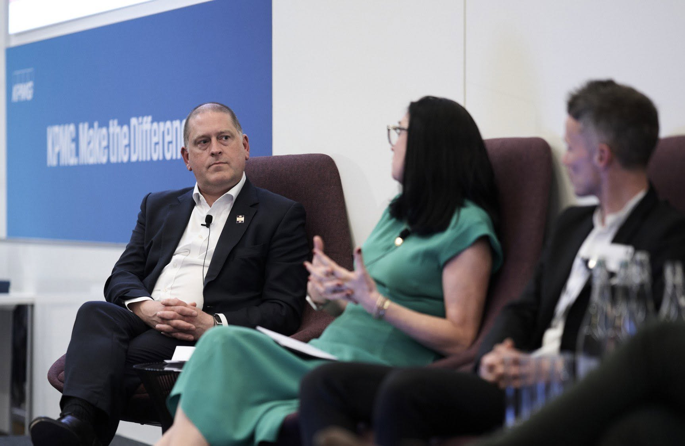

Better transport.
Make everyday journeys simpler, faster and more reliable — whether by bus, rail, road or active travel.
Transport should connect people to jobs, services and opportunity.
Reliable buses, fewer bottlenecks and better rail links are the practical things that can make the biggest difference to everyday journeys.
This page sets out the campaign’s starting point. The detail should keep developing with residents, businesses and communities across Cheshire & Warrington.
What Ben would focus on.
Better buses
Push for more reliable local routes, better connections and services shaped around how people actually travel.
Fix the bottlenecks
Target the congestion and road pinch points that cost residents and businesses time every day.
Back rail investment
Make the case for rail investment that benefits the whole region and connects people to jobs and opportunity.
What should Ben prioritise on transport?
Tell Ben what matters where you live. This is a short campaign survey and your answers can help shape the next stage of the plan.